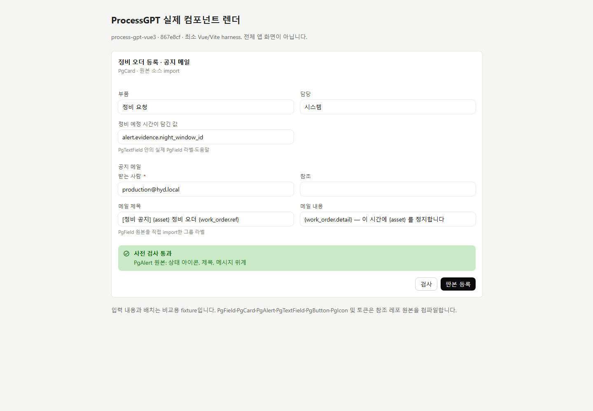
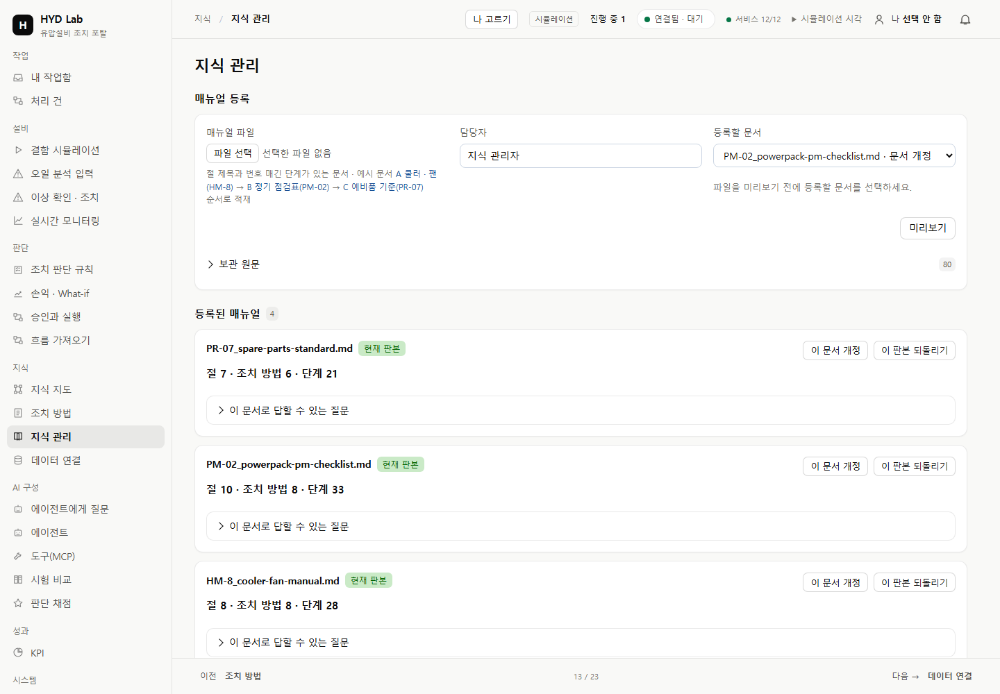
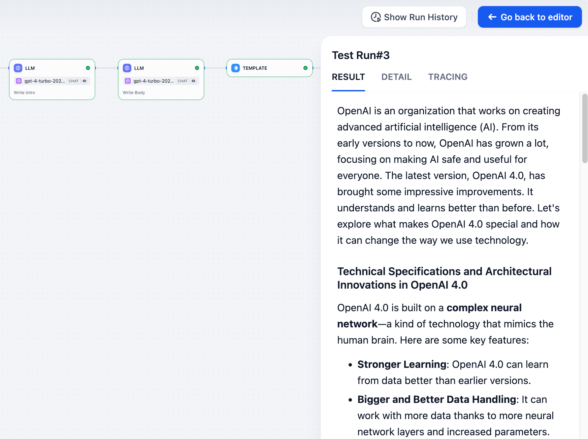
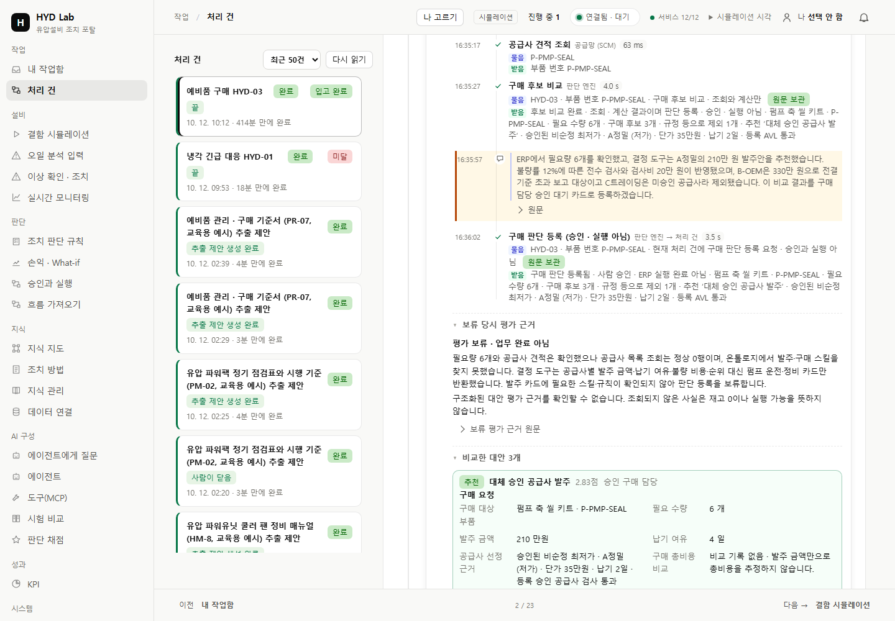

ProcessGPT Vue 원본 폼 구성요소
867e8cf 소스의 PgCard·PgField·PgTextField·PgAlert 등을 직접 컴파일한 참고 화면입니다. 입력값은 비교용이며 전체 앱 실행 화면은 아닙니다.

왼쪽은 보존한 참고 화면, 오른쪽은 실제 포털 캡처입니다. 기능의 종류와 자료는 서로 다르며, 카드·폼·상태·근거의 배치를 비교합니다.
867e8cf 소스의 PgCard·PgField·PgTextField·PgAlert 등을 직접 컴파일한 참고 화면입니다. 입력값은 비교용이며 전체 앱 실행 화면은 아닙니다.

실제1440px. 현재 문서 이름으로 선택하며 정확한 문서 지정은 보존합니다. 검토 중 대상 잠금1024px

기존 조사에서 보존한 공식 문서 화면입니다. 출처와 SHA는 원본 기록에 있습니다.

F27 검증 때 보존한 실제 C 처리 기록1440px입니다. 현재 문서 선택 변경의 새 업무 실행으로 표시하지 않습니다. 검증 범위
